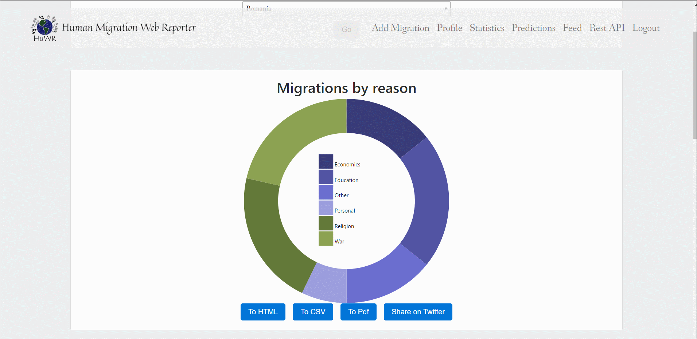
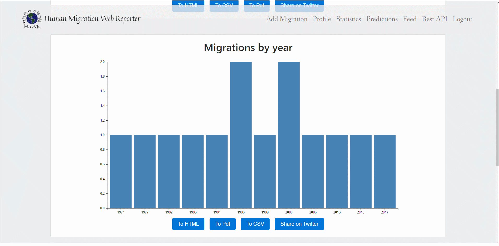
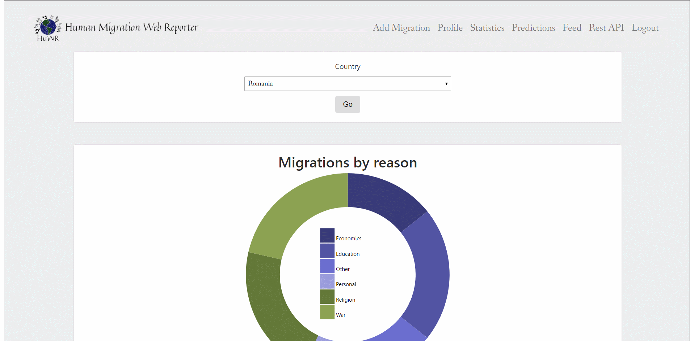

Human Migration Web Reporter
Statistici
Pagina aceasta permite utilizatorilor sa consulte statistici despre o anumita tara.

Statisticile puse la dispozitie de noi sunt:
-
bazate pe motiv

-
bazate pe ani

-
bazate pe varsta(adulti/copii)

De asemenea, utilizatorul poate exporta statisticile in diferite formate:
- HTML 
- CSV 
Utilizatorul are posibilitatea si de a distrbui aceste statistici si pe Twitter utilizand butonul "Share on Twitter", insa doar daca este logat cu Twitter.
